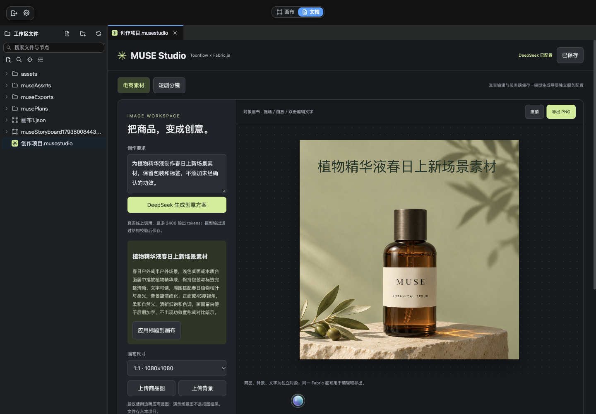
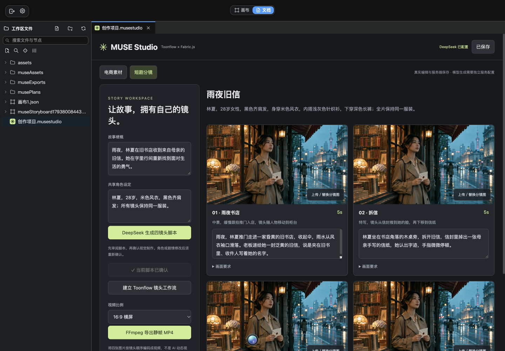
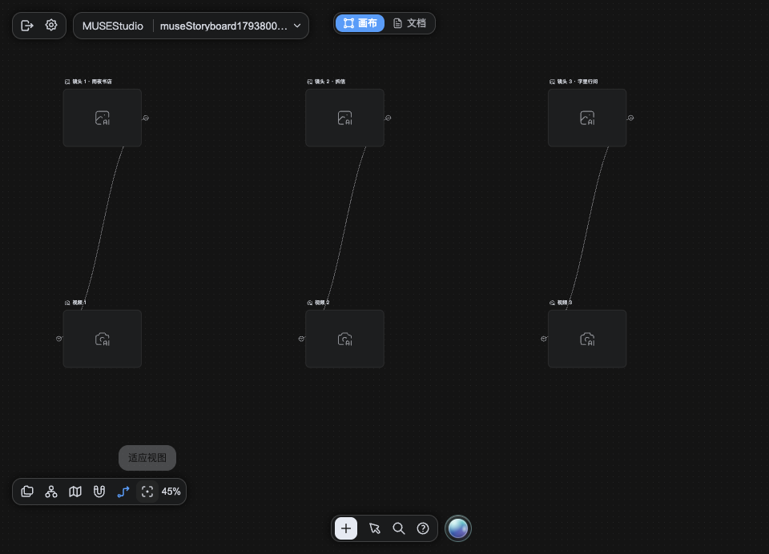

IMPLEMENTATION / 2026.11.04
从创作工作流，
到一次真实的集成验证。
Toonflow × Fabric.js × DeepSeek × FFmpeg。下面展示本机集成的真实截图与导出结果。
当前网页展示已完成的集成记录；在线交互原型使用模拟任务。真实模型与 FFmpeg 服务需自行部署，本站不调用你的模型，也不公开服务端密钥。



NATIVE WORKFLOW
四组图像与视频节点
已按分镜建立 8 个节点和 4 条依赖。媒体模型尚未配置，因此节点显示待生成；不会用预置素材冒充生成结果。

REAL EXPORT
20 秒静帧 MP4
实际通过浏览器提交、后台编码并下载，FFprobe 核验为 H.264、960×540、24fps、20 秒。四个镜头使用同一张预置剧照，只验证编码链路；此视频没有 AI 动态生成、配音或字幕。